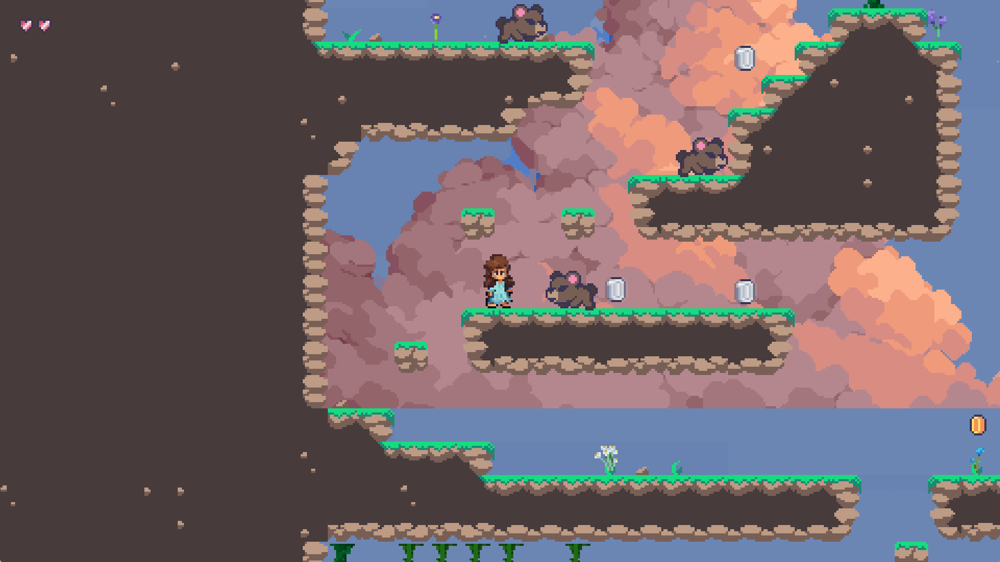
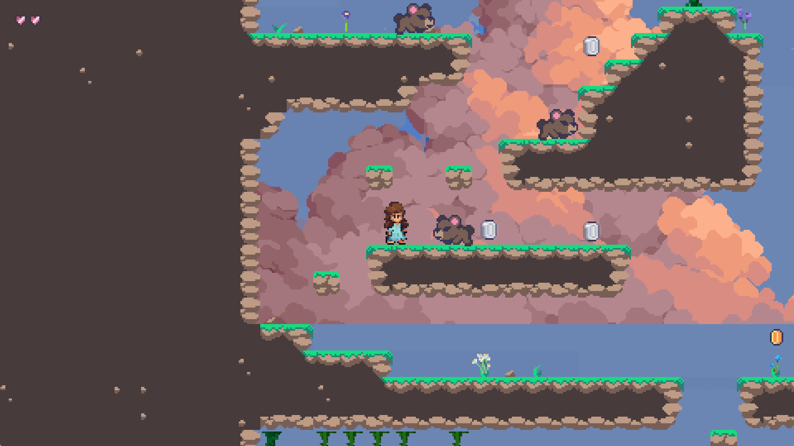
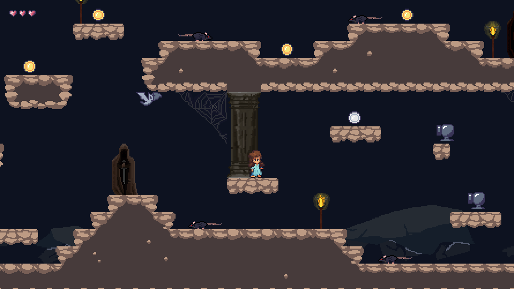
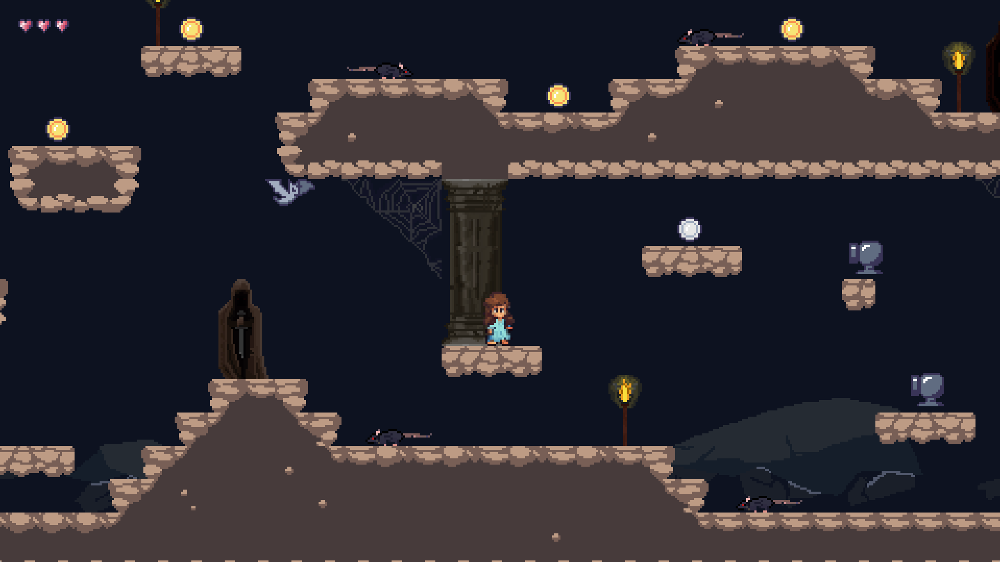
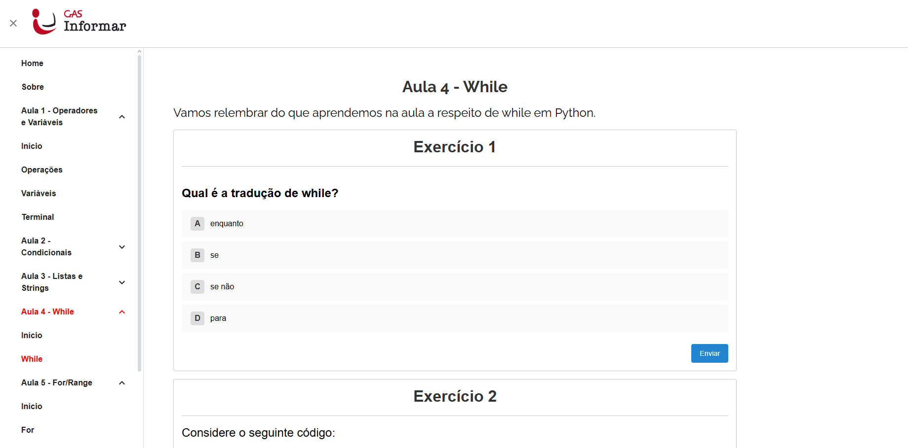
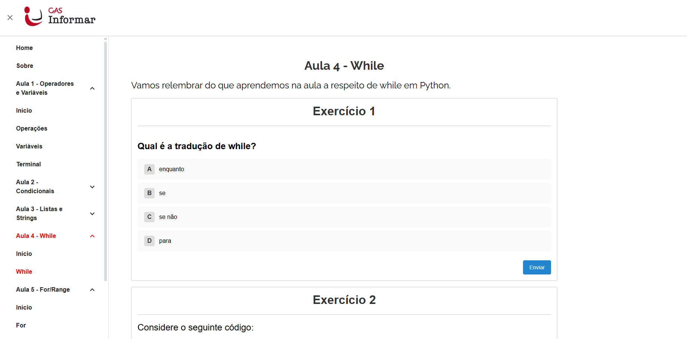

Prazer!
Meu nome é Emily de Britto
Sou de Araras — uma cidadezinha charmosa no interior de São Paulo — e sou apaixonada por arte, comunicação e tecnologia. Estudo Ciência da Computação no Insper e acredito que o código é, sim, uma forma de expressão criativa.
- Python
- HTML
- CSS

Formação Acadêmica
Ensino Fundamental
- Olimpíada Brasileira de Astronomia e Astronáutica
- Olimpíada Brasileira de Matemática das Escolas Públicas
- Olimpíada Paulista de Física
- Maratona do Conhecimento Rede Pitágoras
- Concurso Internacional de desenho Cartaz da Paz
- First Cambridge English- FCE aos 13 anos
Ensino Médio
- Publicação de textos na Festa Literária de Araras – FLAP
- Desafio Nacional Acadêmico – DNA (líder de equipe)
- Eletiva Hackeando a Vida
- Observatório de Problemas Sociais
- Olimpíada Brasileira de Matemática das Escolas Públicas
- Trabalho voluntário na OSAF Araras
Graduação
- Aprovação na USP, UNESP, PUCCamp e Insper – com bolsa integral
- Curso de extensão na FFLCH–USP
- Graduação em Ciência da Computação no Insper (bolsa integral)
- Coordenação de projeto na Organização Estudantil InsperCode
- Membro e marketing da Organização Estudantil InsperSec
Projetos
Pygame: O Quebra-Nozes
 

 


Projeto inspirado em um balé de repertório clássico, com 5 fases únicas interligadas por um mapa overworld.
Desenvolvido em Pygame em apenas duas semanas, conta com animações quadro a quadro, telas personalizadas de instrução e feedback, além de mecânicas e inimigos exclusivos por fase.
Site Informar- GAS
 


Plataforma de exercícios desenvolvida para o Insper Code em parceria com o projeto Informar (GAS), com foco em oferecer prática contínua aos alunos após as aulas. O sistema é dinâmico, responsivo e voltado ao engajamento educacional.
Com Front-End em ReactJS + Vite; Back-End em Python + FastAPI; banco de dados via PostgreSQL e deploy via Vercel
Vamos criar algo juntos?
Se você gostou do que viu por aqui e quer trocar uma ideia, tirar dúvidas ou até começar um projeto incrível juntos, é só me chamar!